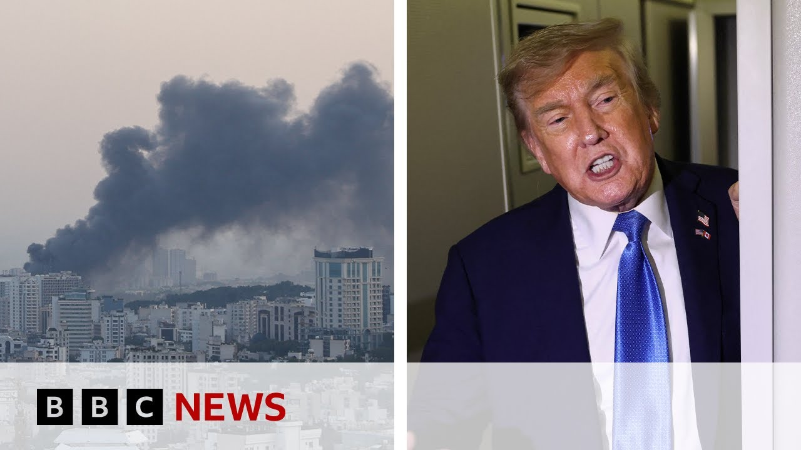

【以色列和伊朗发动新一轮导弹袭击，唐纳德·特朗普呼吁“真正结束”冲突 | BBC新闻】
Summary: There has been a major development in the Middle East involving Israel, Iran, and the Gaza Strip. Former U.S. President Trump has cut short his G7 summit trip and returned to Washington, emphasizing that he will not negotiate with Iran and insisting that Iran must not possess nuclear weapons. Countries such as China and Russia have called on their citizens to evacuate Iran and Israel, while the European Union warned that U.S. involvement could trigger a wider conflict. Israel and Iran continue to launch attacks on each other, resulting in more casualties. Iran claims it has struck Israel's intelligence headquarters, while Israel has targeted Iran’s missile launch sites. The International Atomic Energy Agency has discovered new evidence of damage to Iran’s nuclear facilities. Israeli public opinion is divided on the government’s actions — some support continued strikes on Iran’s nuclear program, while others are concerned that the escalating conflict could jeopardize hostage negotiations in Gaza. Israel’s foreign minister outlined three major military objectives: to destroy Iran’s nuclear program, its ballistic missile program, and its intent to eliminate Israel, but denied seeking regime change.
摘要： 中东局势出现重大进展，涉及以色列、伊朗和加沙地区。特朗普缩短G7峰会行程返回华盛顿，强调不会与伊朗谈判，要求伊朗不得拥有核武器。中俄等国呼吁公民撤离伊朗和以色列，欧盟警告美国介入可能引发更广泛冲突。以伊双方持续互相袭击，造成更多伤亡，伊朗称击中以色列情报总部，以色列则打击伊朗导弹发射场。国际原子能机构发现伊朗核设施受损新证据。以色列民众对政府行动意见不一，部分支持继续打击伊朗核计划，部分担忧冲突升级影响加沙人质谈判。以外长明确军事行动三大目标：摧毁伊朗核计划、弹道导弹计划和消灭以色列的企图，但否认寻求政权更迭。

⏱️ Estimated Reading Time: 26 min
📚 六级生词 📚 雅思生词 📚 托福生词 📚 专八生词 📚 SAT生词 📚 考研生词 📚 GRE生词 📚 高考生词
We start in the Middle East with a number of major developments to bring you in Israel, Iran, and also in Gaza.
我们从中东开始报道以色列、伊朗和加沙地区的多项重大进展。
So, let's begin with something which could be a key indicator of how the US is viewing the conflict between Israel and Iran.
首先关注可能预示美国如何看待以伊冲突的关键迹象。
Uh we can see President Trump here arriving in Washington just after 5 in the morning.
我们看到特朗普总统凌晨5点刚过抵达华盛顿。
He cut short his trip to the G7 summit in Canada.
他缩短了在加拿大的G7峰会行程。
His spokesperson had told us that he wasn't leaving early due to the fighting in the Middle East, but he was pushed by reporters on Air Force One.
发言人曾表示提前离开与中东战事无关，但在空军一号上被记者追问。
And then it was clear that the situation was still very high on his agenda.
显然该局势仍是他优先议程。
He told reporters he was in no mood to negotiate with Iran.
他告诉记者无意与伊朗谈判。
I didn't say I was looking for a ceaseman.
我没说要寻求停火。
That was Emmanuel.
那是马克龙说的。
Nice guy, but he doesn't get it right too often.
人不错但经常搞错。
But uh we're not looking.
但我们不寻求。
We're looking for better than a ceaseman.
我们要比停火更好的方案。
Right now we're doing pretty well.
目前我们做得很好。
Remember Iran cannot have any nuclear weapons.
记住伊朗不能拥有核武器。
It's very simple.
很简单。
Not to go too deep into it.
不深入讨论。
They just can't have a nuclear weapon weapon.
他们就是不能有核武器。
thinking on the call for Iran to evacuate.
考虑要求伊朗撤离。
Is there a threat or is there incoming?
是有威胁还是袭击将至？
What was the thinking on the evacuation?
撤离令出于什么考虑？
I want people to be safe and that's always possible.
我希望人们安全，这总是可能的。
Think like that could happen.
认为可能发生这种情况。
I just want people to be safe.
我只想人们安全。
Is there any new concern about US troops or assets in the region at all today?
今天对美军或地区资产有新担忧吗？
Great people.
优秀的人们。
They know how to protect themselves.
他们懂得保护自己。
And when you say better, what's Oh, we'll come down so hard if they do anything to our people.
你说"更好"是指...若伤害我们的人我们将猛烈报复。
will come down so hard.
会狠狠打击。
Linda loves her off so beautifully.
琳达说得很好。
No.
不。
Uh they uh I think they I think they know not to touch our troops.
我想他们知道别碰我们军队。
Sam, not great on Air Force One, but the words that everyone is really looking into at the moment is when he said, "We are looking at something better than a ceasefire."
山姆在空军一号上表现不佳，但众人关注的是他说"寻求比停火更好的方案"。
Not clear what that meant, but lots of speculation, and we'll be delving into that throughout the program.
含义不明引发猜测，我们将在节目中深入探讨。
The rest of the world, of course, watching these events very, very closely.
世界其他国家正高度关注事态。
China accusing Mr. Trump are pouring oil on the conflict and urging its citizens to leave Iran and Israel as soon as possible.
中国指责特朗普火上浇油，敦促公民尽快离开伊朗和以色列。
And the European Union's foreign affairs representative Ka Kalis had this to say about potential US intervention.
欧盟外交代表就美国可能干预表示：
When it comes to um United States getting involved, then it will definitely uh drag the region into a broader conflict and and this is in nobody's interest.
美国介入必将使地区陷入更广泛冲突，不符合任何人利益。
And uh from my uh call with Secretary of State Rubio, he emphasized that it's also not in their interest to be drawn into this conflict.
与国务卿鲁比奥通话中他强调被卷入冲突也不符合美国利益。
Israel has been conducting its fifth day of attacks on Iran, which is also launching its own missile and drone strikes.
以色列连续第五天袭击伊朗，伊朗也发动导弹和无人机攻击。
There have been more casualties on both sides.
双方伤亡增加。
The Israeli military has issued more evacuation orders for parts of Thran.
以军对德黑兰部分地区发布更多撤离令。
This footage was filmed there earlier today.
这段影像拍摄于今天早些时候。
You can see everyone trying to leave the city, filling up their cars with fuel.
可见人们加油试图离城。
Many of the drivers uh saying it's really hard to get fuel and the roads are chalk full of cars and really stressful trying to get out of the city.
许多司机称很难加油，道路拥堵，出城压力大。
Israel says it's hit a number of missile and drone launch sites in the west of Iran.
以色列称打击了伊朗西部多个导弹和无人机发射场。
Iran says it's carried out successful missile attacks on Israeli military intelligence headquarters and officers housing Mossad, although there's no evidence of this.
伊朗称成功袭击以军情报总部和摩萨德官员住所，但无证据证实。
Missiles also fired at Jerusalem and Tel Aviv.
导弹还袭击了耶路撒冷和特拉维夫。
Well, this was Tel Aviv early this morning apparently as an Iranian air strike was taking place.
这是今晨伊朗空袭时的特拉维夫。
It appears that the overnight attacks from Iran have been less intense than in recent days with no uh reports of any deaths though.
伊朗夜间袭击强度似乎低于近日，尚无死亡报告。
Meanwhile, the International Atomic Energy Agency has said it's identified additional elements that indicate a direct impact on underground enrichment halls at the Natan's nuclear site in Iran.
国际原子能机构称发现新证据表明伊朗纳坦兹核基地地下浓缩设施遭直接打击。
The underground enrichment plant was one of several targeted by Israeli strikes on Friday.
该地下浓缩厂是以色列周五打击的多个目标之一。
Now, the global nuclear watchdog says this latest assessment is based on continued analysis of highresolution satellite imagery.
该机构称最新评估基于持续分析高分辨率卫星图像。
It added that there were no changes to reports from the Foraux and Isvahan enrichment plants in other parts of the country.
并称其他地区核设施报告无变化。
Well, let's take you to Israel now.
现在转向以色列。
We can join our correspondent Ioni Wells who is in uh Herza which is in the north of Israel.
连线北部城市赫兹利亚的记者伊奥尼·威尔斯。
Uh what's happened there, Iony?
当地情况如何？
Well, here in Herzela, which is just north of Tel Aviv, it's a coastal normally touristy city.
赫兹利亚位于特拉维夫以北，通常是旅游海滨城市。
Uh you can see behind me that a bus depot was hit by an Iranian missile this morning.
我身后公交站今晨遭伊朗导弹袭击。
Uh there's multiple buses behind me that have suffered pretty extensive damage.
多辆巴士严重损毁。
This one has been completely gutted by flames.
这辆完全烧毁。
Now we can estimate from where this is what the target of this Iranian missile was.
我们可推测导弹目标。
But Israeli censorship rules mean we cannot broadcast that.
但以色列审查规定不允许报道。
In the meantime though, uh we can say that nobody here was hurt.
不过无人受伤。
Nobody was injured.
无人受伤。
It doesn't seem that there were people in the area.
当时该区域似乎无人。
I've spoken to people in the wider Herzelia region who say that they reported hearing loud booms.
赫兹利亚周边居民称听到巨大爆炸声。
They saw plumes of smoke when this happened.
看到浓烟升起。
And just here you can see the site where this missile appeared to have hit.
这里可见导弹击中点。
It's about 5 m deep.
弹坑约5米深。
This clearly made a significant impact.
显然造成重大冲击。
Uh people reported as I say hearing very loud explosions in Herzelia when this went off and seeing smoke even across the other side of the city.
居民称爆炸声巨大，烟雾弥漫全城。
So uh this is one of the main uh direct hits that has been reported as part of those retalitary Iranian strikes today.
这是今日伊朗报复性袭击的主要直接命中之一。
In the meantime, we know that there are more strikes that have been retorted in Thran.
同时德黑兰也遭受更多打击。
Only what have people been telling you that you've managed to speak to about how they feel about their sense of safety and whether the Iron Dome can protect them at the moment?
民众对安全感和铁穹系统保护能力的看法如何？
Well, there are mixed feelings about this.
看法不一。
I think certainly there is a feeling of shock about how many uh in the last couple of days have got through.
过去几天多枚导弹突破防御令人震惊。
Now still of course the overwhelming majority have been intercepted.
当然绝大多数被拦截。
Uh but some Israelis that I've spoken to have said that they're not used to seeing things get through and it has felt like this conflict has been a lot closer to home particularly in areas that I visited like Batam, like Tamara, like here in Herzelia which have suffered from direct hits.
但部分以色列人称不习惯看到导弹突破，冲突感觉更近了，特别是在巴坦、塔玛拉和赫兹利亚等遭袭地区。
In terms of the response though to the Israeli government and what people think they should be doing in response to some of these direct hits, it does vary.
对政府应对措施的看法各异。
Some I've spoken to uh remain supportive of the Israeli government and say that they feel even though some of their communities are suffering as a result the government should continue striking Iran because they see a sort of bigger picture aim of what they describe as sort of striking Iran's nuclear program.
部分人支持政府继续打击伊朗核计划，尽管社区遭受苦难。
However, I've also spoken to some Israelis who say that this isn't representative of all Israelis and they would like the government to stop.
但也有人认为这不代表所有以色列人，希望政府停止。
Some that I spoke to, for example, yesterday cited that they fear this will damage negotiations to release hostages from Gaza.
有人担心这会破坏解救人质谈判。
Others said that they felt this had taken attention off Gaza uh and they weren't happy with what the Israeli government and the IDF were doing both there but also in Iran at the moment.
还有人认为这转移了对加沙的注意力，不满以军在加沙和伊朗的行动。
So, there are some mixed views among Israelis about how the government is responding to this.
以色列人对政府应对方式看法不一。
But certainly I think something that everyone shares is a sense of shock that this is hitting communities uh buildings some residential areas even bringing this much closer to home for them.
但所有人都对居民区遭袭感到震惊。
I as we speak to you we are also getting live pictures from just south of Tel Aviv which we're going to share with our viewers as well.
我们正获取特拉维夫以南的实时画面。
Uh this is the site of another strike at Rushon Lzion and the foreign affairs minister of Israel Gideon Sarah is there just uh talking to people and looking at the damage that has been done there in Rashan Lazion.
这是里雄莱锡安另一处袭击现场，外长吉迪恩·萨阿正在查看损毁情况。
What is the official word coming out from the government at the moment about how long this could take and what it is they want now from the Americans?
政府关于行动持续时间和对美国要求的表态如何？
Well, uh, that is a question that many are asking.
这是许多人关心的问题。
What is the sort of long-term strategy?
长期战略是什么？
What's the endgame here for Israel?
以色列的最终目标？
And at the moment, we don't necessarily know.
目前尚不明确。
The rhetoric coming out of Israeli ministers has certainly been clear that they want to carry on until they feel they have completely sort of eliminated Iran's nuclear program.
部长们明确表示要继续行动直至消除伊朗核计划。
They've also though hinted that they are increasingly targeting of course top military targets including personnel but also infrastructure uh but also targets associated with the regime whether that be media whether that be uh people close to the leadership in Iran.
并暗示正更多瞄准军事高官、基础设施及政权相关目标，包括媒体和领导层亲信。
So uh that is something which we know we are increasingly hearing from members of the government about what this endgame might look like.
越来越多政府成员谈及最终目标。
But it is unclear as you say what the endgame will be.
但最终目标仍不明确。
At what point would they consider their uh sort of offensive on Iran at the moment a success and as you say what involvement would they want from the US at the moment particularly from President Donald Trump.
何时视为成功？希望特朗普总统提供何种支持？
I good to see you thank you so much.
非常感谢。
We can take you now to G one of our colleagues from BBC Persian who is in Jerusalem for us.
现在连线耶路撒冷的BBC波斯语同事G。
G just update us on what is happening in terms of damage to infrastructure uh people killed in Iran today.
请更新伊朗基础设施损毁和人员伤亡情况。
Well Lucy as we talk right now I am receiving messages from Tehran.
正接收德黑兰消息。
They say they can see a plume of smoke in center of Thran in west and also during the day the Israeli fighter had been pounding numbers of places in Thran and in Karach another city not far from Tehran very strategic city in terms of industrial area and area and military compounds.
德黑兰西部中心可见烟柱，以军白天还袭击了德黑兰和卡拉季多个地点，后者是重要工业军事城市。
But it seems Israeli also last night have killed one of the top commander commander general Shadmani who was the commander of Katal and this is a branch and arm of Iranian revolutionary guards very powerful in terms of military economy and also in politics as well linked with Iranian supreme leader he was killed and he's killing the posing this question of course Israelis say they have killed him but Iranian have not confirmed this yet.
以军昨夜还击毙革命卫队高级指挥官沙德马尼，伊朗尚未确认。
But what we are hearing right now in Iran, the government has been asking the personal protection units of the officials do not carry device which connect to the net.
伊朗政府要求官员保镖勿携带联网设备。
They are afraid there might be electronic surveillance or at least we know that killing a general with a high position just five days ago his predecessor predecessor was killed.
担心电子监控，五日前其前任刚被击毙。
Certainly Iranian are worried the Israeli agents may have infiltrated or spying on them.
担忧以色列特工渗透。
That's why they knew exactly where he was and they may have taken him out.
因此能精准定位清除。
And Gia, the fear that this is causing amongst Iranians at the moment, particularly with President Trump also sort of saying people in Thran have to evacuate.
当前恐慌情绪，特别是特朗普要求德黑兰民众撤离。
What sort of stories are you hearing from people there as they try to leave Thyran uh with their families?
民众携家撤离的情况如何？
You know there's often no fuel as well.
燃料短缺。
What what sort of stories are you hearing?
听到哪些故事？
Lucy, the population of Thran is if you count the surrounding area weighs more than the population entire Israel and just imagine the entire country has to leave their homes and even if they want to leave their homes it takes time with their cars and get out of the city.
德黑兰及周边人口超以色列全国，想象全民撤离所需时间。
I am hearing from people they say we have a sick people at home.
有居民称家中有病人。
We don't have a shelter and obviously Iranian government haven't thought about this day.
无避难所，政府显然未预见到这天。
They haven't built shelter and so many people are worried if this this kind of attack happened they might be hit.
许多人担心遭袭。
Many people have a loved one in the prison.
有亲属在监狱者。
They think if the prisons are being hit those people have nowhere to go.
担忧监狱遇袭无处可逃。
And we hear this kind of a story over and over again.
类似故事不断重复。
And many people are angry with the government.
许多人愤怒于政府。
They say this is not their fight.
称这不是他们的战争。
This is the government war they impose on the country and so many people are angry with the economic situation with inflation.
是政府强加的，且对经济通胀不满。
That's why I think the Israeli government think by by attacking Iranian security forces by attacking revolutionary guards intelligence service which they have a pivotal role in suppressing and oppressing the protest in the past.
以色列可能希望通过打击革命卫队等镇压抗议的安全部队。
they might create an environment for Iranian people to rise up and I think this kind of problem for example the banking system was disrupted it was hacked the even the some of the gas station pumps didn't work electronic one there was a problem and I think these kind of psychological war could agitate people and I think Israeli hope people rise up and topple the government without sending any troops on the ground really good to get your thoughts we're just going to leave you for a moment to listen in to Gideon Sarah who is Israel's uh foreign minister speaking at the site of a strike in Rashan Lzion.
通过银行系统瘫痪、加油站故障等心理战煽动民众推翻政府。
He's taking questions from the media speaking in English.
以外长吉迪恩·萨阿正用英语回答媒体提问。
Now let's have a listen.
请听。
Is it regime change as many are suggesting now?
是否如许多人说的寻求政权更迭？
We have very clear goals first of all to severely damage their nuclear program.
我们有三大明确目标：重创核计划。
We hadn't finished with that.
尚未完成。
We still have objectives.
仍有目标。
We still have targets that now we can uh target easily because our air force now can relatively fly freely there and we still have uh objectives.
空军可相对自由行动，仍要打击目标。
Secondly, to severely damage the ballistic missiles program of the Iranian regime and thirdly to severely damage the plan to eliminate the state of Israel.
第二重创弹道导弹计划，第三挫败消灭以色列的企图。
Regime change is not an objective of this war.
政权更迭非本次战争目标。
It can be a result, but it's not an objective we put to ourselves in this war.
这可能是结果，但不是我们在这场战争中设定的目标。
The Iranian regime has done terrible things, but many uh would say that Israel is the real international pariah accused of genocide in in the international court of justice.
伊朗政权做了可怕的事情，但许多人会说以色列才是真正的国际弃儿，在国际法院被指控种族灭绝。
Your prime minister wanted on war crimes allegations by the international criminal court.
你们的首相因国际刑事法院的战争罪指控被通缉。
These ridiculous uh allegations were already thrown to by the appeal uh after uh we appealed uh because uh this ridiculous court and corrupted court uh never even discussed the issue of jurisdiction for example because they don't have any uh authority over Israel.
这些荒谬的指控在上诉后已被驳回，因为这个可笑且腐败的法院甚至从未讨论管辖权问题，例如他们对以色列毫无权威。
It's not we are not a member state in the IC the number of people being killed will allow others yes target we I know it is strange but we never say time ahead who is uh an objective who is not uh every civilian innocent civilians are not the targets but uh you saw this morning we wake up and we We've heard that uh the commander of Iran in this war was uh took out after we took out uh the first one.
我们不是国际法院成员国，死亡人数会让其他人成为目标，我知道这很奇怪，但我们从不提前说明谁是目标，谁不是，每个无辜平民都不是目标，但今早我们醒来后听说伊朗在这场战争中的指挥官已被清除。
So I will commend to the next line that will be offered the job not to respond positively very quickly.
因此我建议下一任接替者不要过快积极回应。
Minister, next question.
部长，下一个问题。
Yes, please. British Winston Marshall, British independent journalist in when Iran launched their missiles in April 2024.
请提问。英国独立记者温斯顿·马歇尔，关于伊朗2024年4月发射导弹时。
The British Royal Air Force were a part of the assistance to Israel in taking down those missiles and drones.
英国皇家空军协助以色列击落了那些导弹和无人机。
The Times of London have reported that they were not the British government were not informed about Operation Rising Line.
《伦敦时报》报道称英国政府未被告知“崛起行动”。
What changed in relations between Israel and Britain in that time and what can we expect about future relations between the two countries?
当时以英关系有何变化？对未来两国关系有何期待？
Is it possible to look at the I I can only uh comment on behalf of the Israeli government and the Israeli people.
我只能代表以色列政府和人民评论。
You must ask this question. Uh the British government.
你必须问英国政府这个问题。
Thank you. Other question.
谢谢。其他问题。
Wait a second. Wait a second. Yes, please in Mexico.
稍等。墨西哥的请提问。
I wanted to ask you how many missiles have been launched since Friday?
我想问自周五以来发射了多少导弹？
Uh that was the start of the operation.
那是行动的开始。
And how many missiles have landed in Israel and how many have been stopped by the iron dump?
多少导弹落在以色列？多少被“铁穹”拦截？
We have uh I cannot give you now the accurate number but certainly hundreds certainly hundreds of missiles.
我无法提供准确数字，但肯定是数百枚。
Uh we knew when we decided on Thursday night this historic decision that we will face damages that we will face casualties but we also knew that there is a price not taking that decision and that decision was taken in the last possible moment a decision which is crucial to ensure the future and the security of the state of Israel.
周四晚做此历史性决定时，我们知道会面临破坏和伤亡，但也知道不决定的代价，这一决定在最后关头做出，对确保以色列的未来和安全至关重要。
Next question. Yes, please. As student of the Guardian, you said the third objective is to uh get rid of the plan, Iran's plan to severely damage Iran's eliminations plan.
下一个问题。请提问。《卫报》学生记者，你说第三目标是破坏伊朗的消灭计划。
So, how do you do that without changing the regime?
如何在不改变政权的情况下实现？
We are doing that uh gradually.
我们正逐步推进。
First, we cut the hands of the octopus when we dealt with Hamas and Hisbala.
先切断“章鱼”的触手，如哈马斯和真主党。
Now, we are dealing with the head of the octopus.
现在正对付“章鱼”的头。
We are dealing with the most significant threats and there are the ballistic threats and the nuclear threat and those threats are combined with their allies to the Iranian axis and while we are uh taking this operation uh we are uh uh no doubt uh getting a progress in uh achieving this objective.
我们应对最重大威胁——弹道导弹和核威胁，这些威胁与伊朗轴心盟友结合，而在此行动中我们无疑正取得进展。
Next question. Yes, other questions.
下一个问题。还有其他问题。
Minister one ID question.
部长，最后一个问题。
You already have. Yes, please. What is your Fernando Mexico City?
请提问。墨西哥城的费尔南多，你的问题是？
What is your message to all the people in jail and sufferings that feel risk every night for we are facing difficult days but the people of Israel support this operation because the people of Israel totally understand it is vital to ensure the future of this state.
对每晚感到风险的受难民众有何信息？我们面临艰难时期，但以色列人民支持此行动，因为他们明白这对国家未来至关重要。
So I'm saying to them, we will face this difficult days.
我告诉他们，我们会挺过难关。
We will face this uh uh casualties as well, but we will ensure the future of the state of Israel for a very very long time.
我们也会承受伤亡，但将确保以色列的未来长存。
Thank you everyone. Thank you. Thank you.
谢谢大家。谢谢。
That's Israel's foreign minister, Girian Sa.
这是以色列外长吉兰·萨。
He's at the site of a missile strike there in Rashan La Zion, which is uh a coastal city.
他在导弹袭击地拉什安·拉锡安，这是座沿海城市。
It's just south of Tel Aviv, right near Bengurian airport.
位于特拉维夫以南，紧邻本古里安机场。
Just talking about the clear goals and objectives of what Israel is trying to do in Iran to severely damage their ballistic missiles and nuclear program and their plans to eliminate Israel.
他阐述了以色列对伊朗行动的目标：重创其弹道导弹和核计划，挫败其消灭以色列的图谋。
Making it clear that the uh regime uh the plans to topple the regime are not an objective of the Israeli government.
明确表示推翻政权并非以色列政府目标。
He says they might be a result, but he says they are not an objective despite the fact that we've heard the prime minister Benjamin Netanyahu directly appeal uh to Iranians to overthrow the regime themselves.
他说这可能是结果，但不是目标，尽管内塔尼亚胡总理曾直接呼吁伊朗人自己推翻政权。
So uh that's the latest from the Israeli government.
这是以色列政府的最新表态。
We'll have more on this story coming up around the world and across the UK.
全球及英国各地将有更多报道。
This is BBC News.
BBC新闻。